Что в возрасте тебе моем?
Илья Кашницкий 1
1 Кашницкий Илья Савельевич – студент 2 курса магистерской программы «Демография» НИУ ВШЭ, стажер-исследователь Института управления социальными процессами НИУ ВШЭ
О чем может рассказать возраст населения
Возраст - ключевая демографическая переменная, возрастная структура хранит демографическую историю населения за многие десятилетия. Обычно, анализируя возрастной состав по результатам переписей населения, рассматривают население либо всей страны, либо выделенных с той или иной целью регионов или отдельных территориальных единиц. В настоящей статье предпринята попытка одновременного рассмотрения, на основе визуального анализа пространственных данных, информации о демографических процессах, которую можно почерпнуть из зафиксированных переписью населения различий в возрастном составе населения большого числа «низовых» единиц административно-территориального деления (АТЕ) России.
С этой целью по результатам переписи населения России 2010 был построен ряд картограмм для таких «низовых» единиц - муниципальных районов и городских округов (всего 2343 единицы). Такой масштаб рассмотрения позволяет выявлять внутрирегиональные различия, теряющиеся при переходе на более высокий уровень территориального членения. Преимущество картографического подхода при подобном анализе очевидно: это наиболее наглядный способ оценить пространственные различия какого-либо показателя одновременно для пары тысяч территорий.
Демографические процессы оказывают долговременное воздействие на возрастно-половой состав населения. В свою очередь, возрастные структуры населения комплексно отражают результат взаимодействия всех демографических процессов. Таким образом, визуальный анализ карт, составленных по данным переписи населения, позволяет косвенно судить о демографических процессах, сформировавших его возрастные структуры.
Пространственная дифференциация структурных демографических показателей может быть результатом существенных различий в интенсивности рождаемости и смертности. В таком случае речь может идти о территориальных совокупностях населения, находящихся на разных стадиях демографического перехода. В обширной и пространственно неоднородной России имеется место для подобных различий на уровне регионов страны. Но особенность переписных данных позволяет нам заглянуть «внутрь» регионов, исследовать различия между центрами и периферией. И здесь, помимо процессов естественного движения населения, большое воздействие оказывает миграция. Существенное меж- и внутрирегиональное разнообразие в большой степени объясняется перемещениями населения, особенностями возрастного состава мигрантов. На завершающих стадиях демографического перехода вклад пространственной мобильности населения в формирование демографических структур становится определяющим 2.
2 Coleman D. (2006). Immigration and ethnic change in low-fertility countries: A third demographic transition // Population and Development Review. 32(3): 401-446.
Начнем обзор с важной демографической характеристики населения – медианного возраста. Карта медианного возраста населения России (рис. 1) уже дает общее представление о пространственной дифференциации режимов воспроизводства населения.
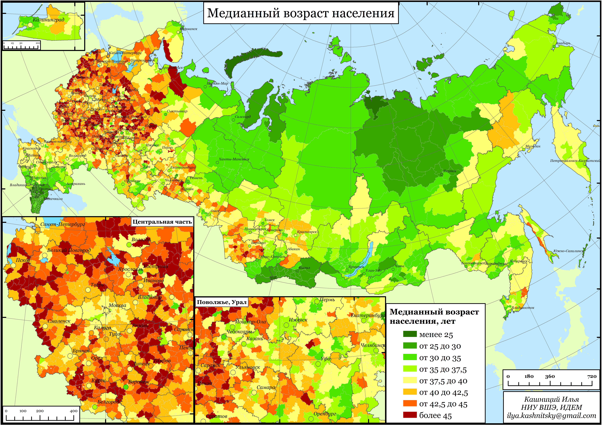
Рисунок 1. Медианный возраст населения России, 2010 год
Печально известная советская и постсоветская специфика – большая разница в смертности мужчин и женщин, пресловутая «мужская сверхсмертность» ведет к тому, что медианный возраст мужского и женского населения сильно различается. Наряду с Украиной и Белоруссией, Россия лидирует в мире по разрыву в ожидаемой продолжительности жизни мужчин и женщин при рождении. В 2010 году в России этот разрыв составил 11,9 года. Ниже приведены карты медианного возраста мужского и женского населения раздельно.
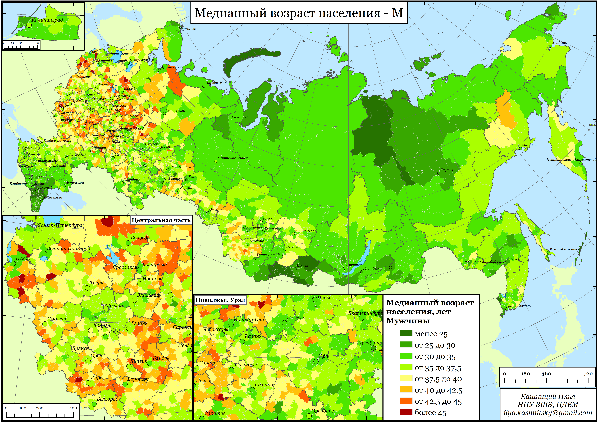
Рисунок 2. Медианный возраст МУЖСКОГО населения России, 2010 год
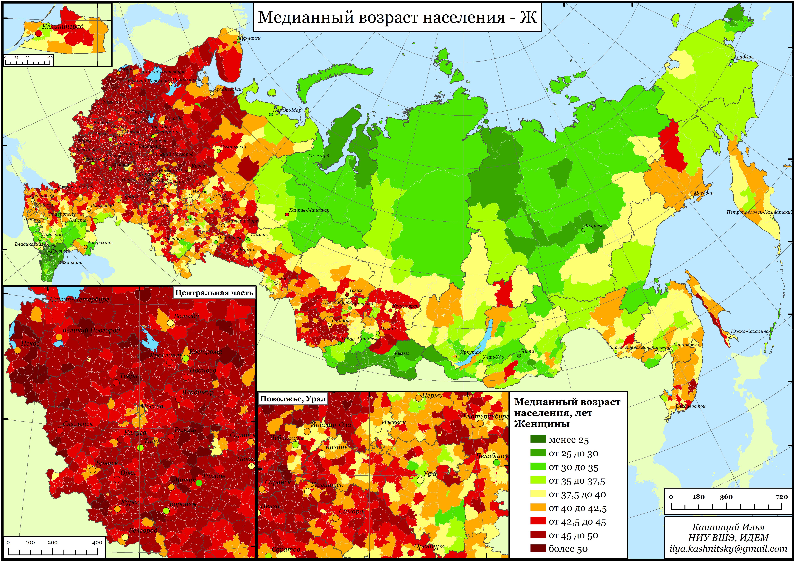
Рисунок 3. Медианный возраст ЖЕНСКОГО населения России, 2010 год
При рассмотрении медианного возраста всего населения (рис. 1) отчетливо выделяются «молодой зеленью» регионы Северного Кавказа и Южной Сибири – территории, население которых еще далеко от завершения демографического перехода. Оставшаяся от традиционного режима воспроизводства высокая рождаемость в них обеспечивает значительную долю детей в возрастной структуре населения. (рис. 4). В результате – медианный возраст всего населения низкий, особенно в ряде сельских районов (рис. 4).
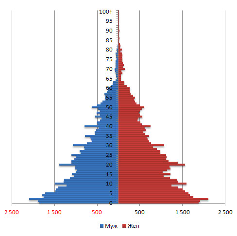
Рисунок 4. Возрастно-половая структура населения Курчалоевского муниципального района Республики Дагестан, 2010. Медианный возраст 20 лет
Регионы Крайнего Севера с относительно низким медианным возрастом населения имеют другую историю формирования «молодого» населения. Это - территории сравнительно недавнего освоения, здесь все еще высок миграционный оборот населения. Мигранты, очень многочисленные по сравнению с коренным населением, еще не успели массово состариться (рис. 5). Непропорционально малочисленная верхушка пирамиды позволяет нам предположить, какой была бы численность аборигенного населения, если бы не активное заселение этих территорий. Кроме того, миграция также существенно омолаживает демографические структуры населения Крайнего Севера. Речь не только о притоке молодой рабочей силы, свой вклад в омоложение населения также вносят пожилые переселенцы, уезжающие после выхода на пенсию в более теплые, климатически более привлекательные, края. Однако можно заметить, что медианный возраст населения в этих регионах все же существенно выше, чем на Северном Кавказе или в Южной Сибири. Миграция хоть и существенно влияет в итоге на рождаемость и замещение поколений 3, все же в основном увеличивает численность возрастных групп в молодых трудоспособных возрастах и не приводит к снижению медианного возраста населения до уровня традиционного общества. Кроме того, медианный возраст населения российского Севера и Востока значительно повысился в результате «западного дрейфа», наблюдавшегося в России после распада СССР 4.
3 Захаров С.В., Сурков С.В. Миграция и рождаемость в России // Демоскоп Weekly, 2009, № 399–400. http://demoscope.ru/weekly/2009/0399/tema01.php; Wilson C, Sobotka T., Williamson L., Boyle P. Migration and Internal Replacement in Europe // Population and Development Review, 2013, 39(1): 131-157.
4 Мкртчян Н.В. Миграция в России: западный дрейф // Демоскоп Weekly, 2005, № 185–186. http://demoscope.ru/weekly/2005/0185/tema01.php
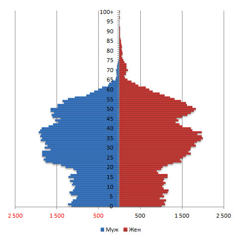
Рисунок 5. Возрастно-половая структура населения города Норильска, Красноярский край, 2010. Медианный возраст 33,7 года
Обзор пространственной дифференциации не случайно начат с более «крупномасштабного» взгляда на карту медианного возраста населения России, «игра масштабами» призвана сделать знакомство с более детальными данными постепенным. Основная идея перехода к рассмотрению демографических процессов на уровне городов и районов заключается как раз в изучении внутрирегиональной ситуации (рис. 6).
Сравнительная «молодость» всех региональных центров бросается в глаза, что служит ярким выражением центро-периферийной неоднородности пространства в каждом регионе.
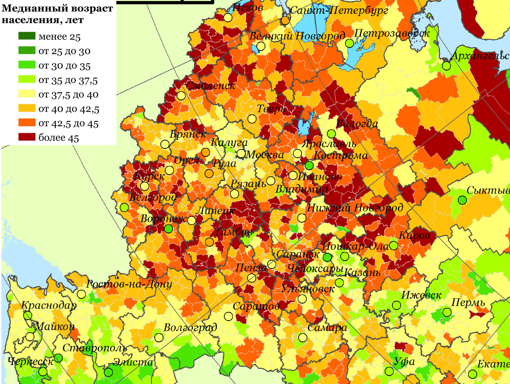
Рисунок 6. Медианный возраст населения – Европейская часть, фрагмент, 2010 год
Как миграция меняет возрастную структуру населения
В чем причина столь выраженных внутрирегиональных различий, имеющих повсеместное распространение? Продолжительный приток населения в региональные столицы существенно омолаживает их возрастную структуру. Миграционная активность концентрируется в молодых возрастах, селективную роль миграции отмечал еще Эрнест Равенштейн 5, а позже его идеи развил и переосмыслил Эверетт Ли 6. Дороти Томас 7 предложила термин «дифференциальная мобильность» населения. Возрастная селективность миграции изучена уже основательно, в частности, фундаментальное исследование возрастных профилей мигрантов на эмпирических данных провел Луис Кастро 8. Специфичное возрастное распределение миграционных потоков наблюдается практически повсеместно, лишь с небольшими вариациями, доминирующая роль молодежи в миграциях бесспорна. Ниже приведен график возрастного распределения внутренних мигрантов в России по данным текущего миграционного учета в 2010 году.
5 Ravenstein E. The Laws of Migration // Journal of the Royal Statistical Society, 1885, 48: 167-227.
6 Lee E. Theory of Migration // Demography, 1966, 3(1): 47-57.
7 Thomas D. Research Memorandum on Migration Differentials // New York: Social Science Research Council, 1938. Bulletin 43.
8 Castro L. Analysis of Age-Specific Gross and Net Migration Schedules // Population Index, 1985, 51(3): 402-402.
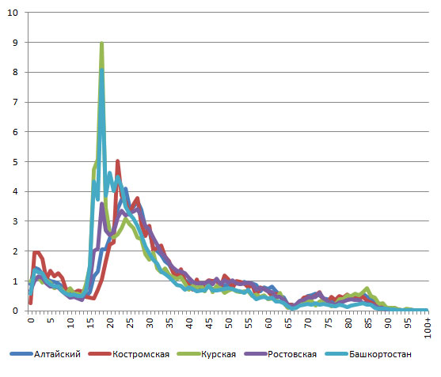
Рисунок 7. Распределение внутрирегиональных мигрантов по возрасту, по некоторым регионам России в 2010 году (прибытие, в % возрастной группы от общего числа мигрантов)
Отметим, что возрастные профили регистрируемой текущим учетом миграционной активности населения схожи практически во всех возрастах. Существенные различия наблюдаются лишь в т.н. «студенческих возрастах». Это наводит на мысль о недостатках текущего учета и подчеркивает важность изучения миграции с помощью данных переписей населения. Судя по данным рис. 7, в Алтайском крае и Костромской области студенческие перемещения вообще не регистрируются в текущем учете миграционной активности населения. Да и в Ростовской области 18-летний пик практически не выражен. Видимо, здесь проявляется одна из основных проблем текущего учета – недоучет перемещений молодежи. Вплоть до 2011 года текущий учет миграции «не замечал» значительную долю молодежной образовательной миграции 9. Но даже несовершенные российские данные о внутренней миграции полностью подтверждают ее «молодежный» характер. За счет перераспределения молодежи радикально меняется демографическое будущее как принимающих территорий (в нашем случае – центров притяжения), так и отдающих (региональная периферия).
9 Чудиновских О.С. Современное состояние статистики миграции в России: новые возможности и нерешенные проблемы // Вопросы статистики, 2010, 6: 8-16.
10 Население России 2008. Шестнадцатый ежегодный демографический доклад / Отв. ред. А.Г. Вишневский. М.: Изд. дом ГУ ВШЭ, 2010. с. 290-292.
11 Изард У. Методы регионального анализа: введение в науку о регионах. М.: Прогресс, 1966.
Территорию каждого региона можно разделить на «центр» и внутреннюю периферию, но и последняя неоднородна, в данном случае, в отношении миграционной привлекательности/аттрактивности. Судя по имеющимся данным 10, миграционная привлекательность нарастает от сельских, депрессивных периферийных районов к региональным центрам. При этом численность населения административно-территориальной единицы предстает сразу и ключевым показателем миграционной привлекательности, и результатом перераспределения населения 11. Поэтому, разделив административно-территориальные единицы на муниципальные районы и городские округа и сгруппировав последние по численности их населения, можно с определенной долей условности считать, что подобная стратификация отражает различия в миграционной привлекательности этих групп территорий, которая будет нарастать от сельских округов до крупнейших городов. В отдельные группы вынесены региональные центры (они, как правило, и так лидируют по численности населения в регионе), в которых к высокой численности населения примешивается еще и «административный» фактор, а также бывшие закрытые города (ЗАТО). Население ЗАТО формировалось при определяющем влиянии государственного регулирования, и миграции в них нельзя рассматривать как «голосование ногами».
Воздействие миграции на демографические структуры населения отчетливо видно при анализе табл. 1. С увеличением миграционной привлекательности территории растет доля молодежи (столбец 6 таблицы), увеличивается асимметрия соотношения полов (1), убывает медианный возраст населения (2), (3), (4), снижается демографическая нагрузка на трудоспособное население (5). Не выявляется разница лишь между городами с населением более 250 тысяч и 100-250 тысяч человек.
Таблица 1. Группировка все городов и районов России по некоторым демографическим характеристикам населения, 2010 год
| Группа территорий* | Среднее значение | |||||
|---|---|---|---|---|---|---|
| Женщин на 1000 мужчин | Медианный возраст | Нагрузка на трудоспособное население | Доля молодежи (16-29 лет) | |||
| Все население | Мужчины | Женщины | ||||
| (1) | (2) | (3) | (4) | (5) | (6) | |
| Региональные центры | 1218 | 36,3 | 33,6 | 39,1 | 57 | 24,5 |
| Более 250 тыс. человек | 1169 | 37,6 | 34,8 | 40,5 | 58 | 22,1 |
| Более 100 тыс. человек | 1160 | 37,7 | 34,7 | 40,7 | 64 | 21,6 |
| Другие городские округа (менее 100 тыс. человек) | 1140 | 37,6 | 34,7 | 40,6 | 64 | 20,7 |
| Муниципальные районы | 1118 | 39,7 | 36,7 | 42,6 | 70 | 19,1 |
| ЗАТО | 982 | 33,7 | 30,7 | 37,4 | 50 | 26,7 |
| РОССИЯ | 1125 | 39,0 | 36,0 | 42,0 | 67,8 | 19,8 |
Источник: данные Всероссийской переписи населения – 2010. Группы территорий выделены по убыванию гипотетической миграционной привлекательности (за исключением ЗАТО).
Соотношение полов тоже зависит от возраста
Еще одно свидетельство влияния миграции на формирование возрастной структуры населения – соотношение мужчин и женщин. Согласно одному из «законов Равенштейна» 12, в миграции на короткие расстояния женщины проявляют большую активность, нежели мужчины (на большие расстояния – наоборот). Очевидно, внутрирегиональные перемещения должны приводить к повышенной концентрации женского населения в региональных центрах. Однако, соотношение всего женского населения ко всему мужскому не позволяет это утверждать (рис. 8). Связано это с тем, что доля женщин может быть велика как в региональном центре, куда они мигрируют, так и в глубинке, где миграционный отток молодежи в совокупности с повышенной смертностью мужского населения сформировал «царство бабушек».
12 Ravenstein E. (1885) The Laws of Migration // Journal of the Royal Statistical Society. 48: 167-227.
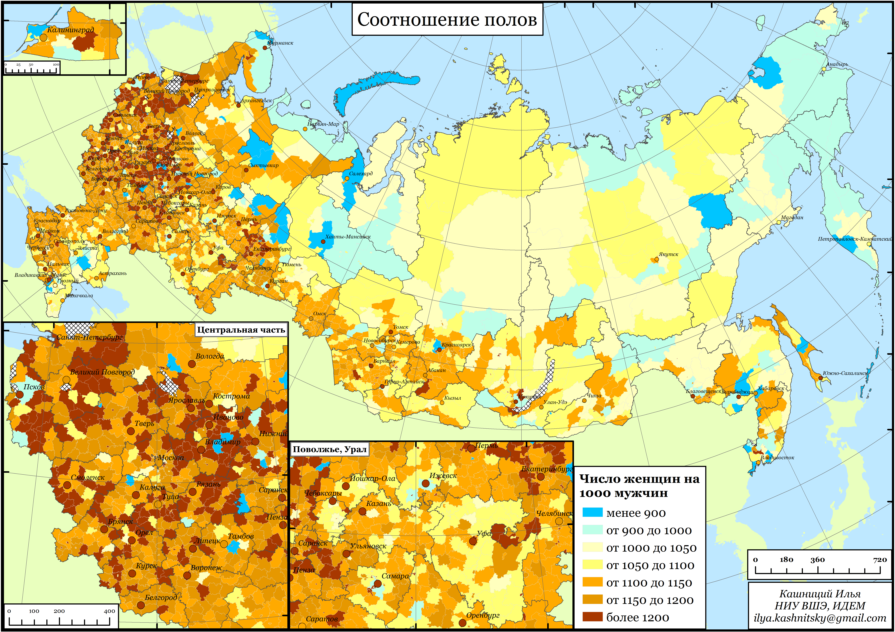
Рисунок 8. Соотношение числа мужчин и женщин в 2010 году (число женщин на 1000 мужчин), все население
Интереснее выглядит соотношение женщин к мужчинам в возрасте от 16 до 29 лет, т.е. среди молодежи. Здесь смертность еще не оказывает столь значимого воздействия, как в более зрелых возрастах. Например, по нашим оценкам, потери от смертности в «студенческих» когортах (от 18 до 22 лет в 2010 году) за последний межпереписной период не превысили одного процента 13. Отметим, что в целом в молодых возрастах численность мальчиков практически везде и всегда больше численности девочек. Вторичное соотношение полов (при рождении), как правило, составляет 1,05-1,06:1 (мальчики/девочки). Соотношение обычно выравнивается с возрастом за счет повышенной смертности у мужчин. По данным переписи 2010 года (рис. 9), в России третичное соотношение полов (соотношение полов у взрослого населения) выровнялось к возрасту 29,5 года.
13 Kashnitsky I (2013). Migration of Youths in Russia: Impact on Sex-age Structures // Mediterranean Journal of Social Sciences. 4(10): 358-365.
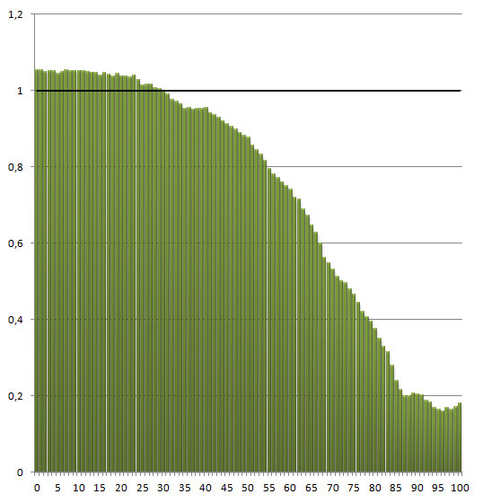
Рисунок 9. Соотношение полов в разных возрастах, Россия в 2010 год (число мужчин на 1 женщину)
Из-за указанной специфики возрастного соотношения полов на рис. 10 доминируют «холодные» цвета – территории с преобладанием мужского населения. Однако отчетливо выделяются соответствующей «теплой» цветовой гаммой практически все региональные центры – в них преобладает женское население даже в студенческих возрастах. Такая внутрирегиональная дифференциация – результат миграции. Небольшой шум на данной карте вносит дислокация армейских частей и мест лишения свободы, где в основном резко преобладает молодое мужское население. Это так называемое институциональное население, которое в России очень значительно по своей численности и может вносить значимые перекосы в половозрастной состав населения административно-территориальных единиц рассматриваемого в этой статье уровня. Напомним, что, начиная с переписи 2010 года, институциональное население стали учитывать по месту пребывания. Устранение (или изучение) этого «шума» – довольно сложная задача, требующая, возможно, отдельного исследования.
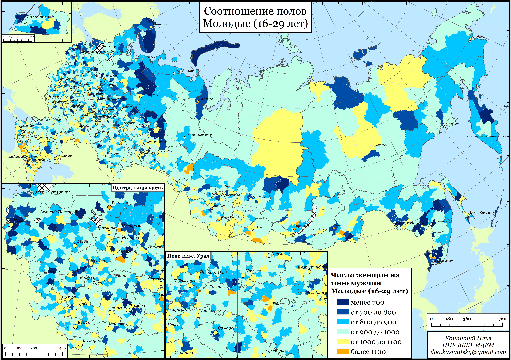
Рисунок 10. Соотношение числа мужчин и женщин в 2010 году (число женщин на 1000 мужчин), 16-29 лет
Региональные столицы притягивают молодежь
Ниже представлены характерные демографические структуры населения регионального центра и депрессивного района внутренней периферии. Они, как уже отмечалось выше, формируются при непосредственном воздействии центро-периферийной внутрирегиональной (и межрегиональной) миграции. В качестве контрастных примеров мы приводим значимый даже в масштабах страны образовательный центр Томск (рис. 11) и один из муниципальных районов внутренней периферии Псковской области, знаменитой своей депрессивностью (рис. 12).
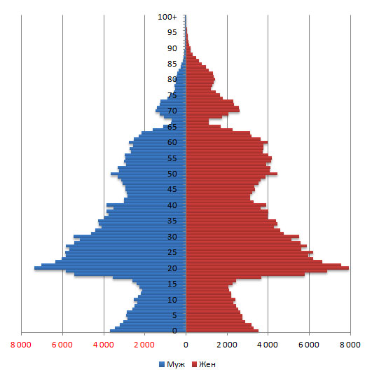
Рисунок 11. Возрастно-половая структура населения города Томска, 2010. Медианный возраст 32,9 года
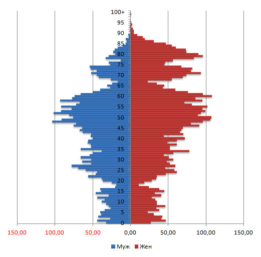
Рисунок 12. Возрастно-половая структура населения Пустошкинского муниципального района Псковской области, 2010. Медианный возраст 48,8 года, для женщин – 51,4
Возрастная структура города Томска, в целом, похожа на общероссийскую. Прослеживаются все те же демографические волны – результат непростой истории России в двадцатом веке. Ключевое отличие – специфическое резкое увеличение численности населения в молодых возрастах в возрасте 18 лет и старше. Это, в основном, результат образовательной миграции – наиболее многочисленные возрастные группы – студенты, которые съезжаются в томские высшие учебные заведения со всей Сибири. Можно заметить существенную разницу в численности возрастных групп старшего и младшего студенческих возрастов в 2010 году. Между ними пролегает историческая граница – распад СССР и последовавшее обвальное снижение рождаемости. На возрастной структуре Томска число 21- и 20-летних (1989, 1990 годы рождения) значительно больше числа 19- и 18-летних студентов (1991, 1992 годы рождения). Примечательно, что эта разница больше у юношей, что также подтверждает наши предыдущие выводы относительно более интенсивной внутренней миграционной активности девушек.
Совершенно противоположный пример представляют собой наиболее депрессивные районы внутрирегиональной периферии. Искореженная возрастная структура Пустошконского муниципального района Псковской области - результат постоянного оттока населения на протяжении уже не одного поколения. Автору довелось бывать в данном районе – депрессивность его бросается в глаза.
Очень яркую картину рисует показатель доли молодежи (16-29 лет) в общей численности населения (рис. 13). По нашим расчетам, на возрастную группу в возрасте 16-29 лет приходится 40,5% всех межрегиональных перемещений в России, учтенных в 2010 году, и 40% - внутрирегиональных. И при этом не стоит забывать, что молодежная возрастная группа включает в себя «студенческие возраста», в которых недоучет миграций велик.
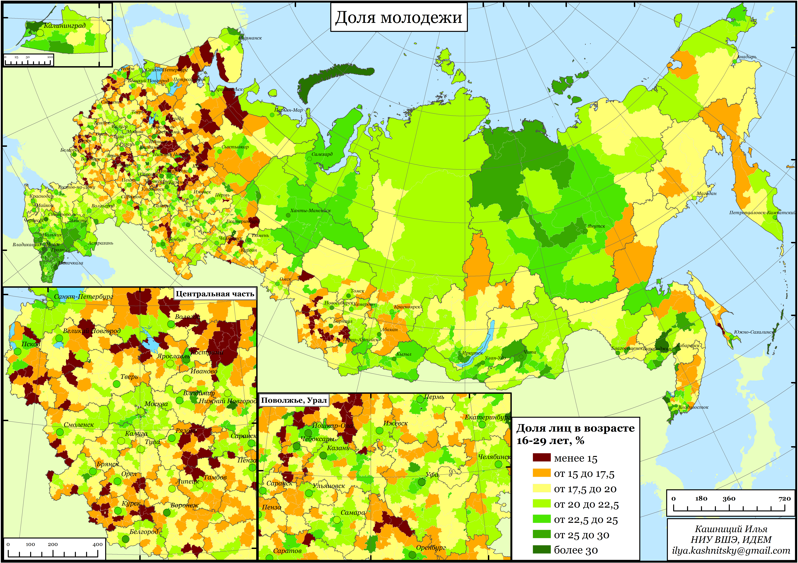
Рисунок 13. Доля населения в возрасте 16-29 лет, 2010, %
Миграционно привлекательные территории выявляются четче на карте молодого населения (рис. 13), чем на карте медианного возраста (рис. 1) – мы ведь уже не учитываем детей, зрелых людей и стариков, а сосредотачиваемся исключительно на молодежи. Средняя по региональным центрам доля молодежи составляет 24,5%, в то время как в среднем по России – 19,8%, по преимущественно сельским муниципальным районам – 19,1% (см. табл. 1). Именно столичные города привлекают подавляющую часть и международного притока мигрантов 14. Например, по расчетам на основе текущего учета миграции 15, за последний межпереписной период (2003-2010 гг.) города Алтайского края приняли 72,8% прибывших в край международных мигрантов, при этом доля горожан в населении края составляет 54%.
14 Lee E (1966). Theory of Migration // Demography. 3(1): 47-57; Massey D, Arango J et. all (1993). Theories of International Migration // Population and Development Review. 19(3): 431-466.
15 Kashnitsky I (2013). Migration of Youths in Russia: Impact on Sex-age Structures // Mediterranean Journal of Social Sciences. 4(10): 358-365
Анализ распределения территорий по доле молодого населения (рис. 14, 15, 16) по группам регионов дает больше пищи для визуальной аналитики пространственного распределения демографических данных.
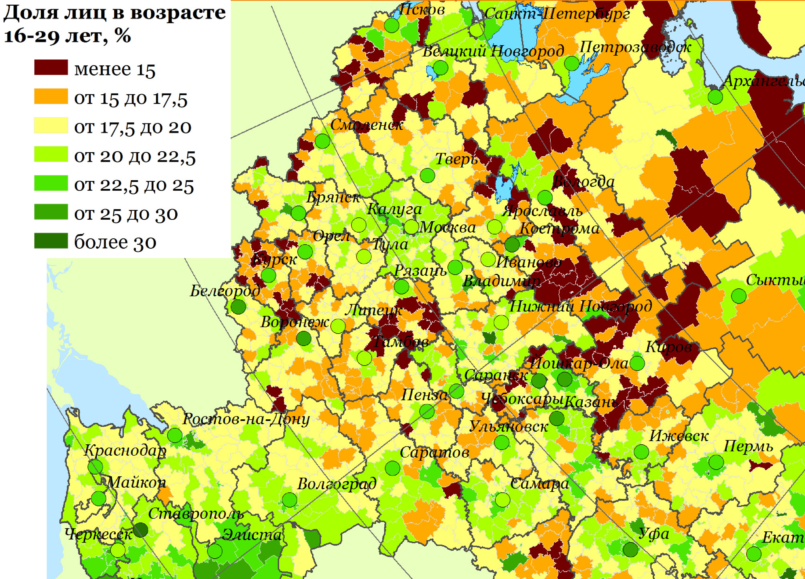
Рисунок 14. Доля населения в возрасте 16-29 лет, 2010, % - Европейская часть, фрагмент
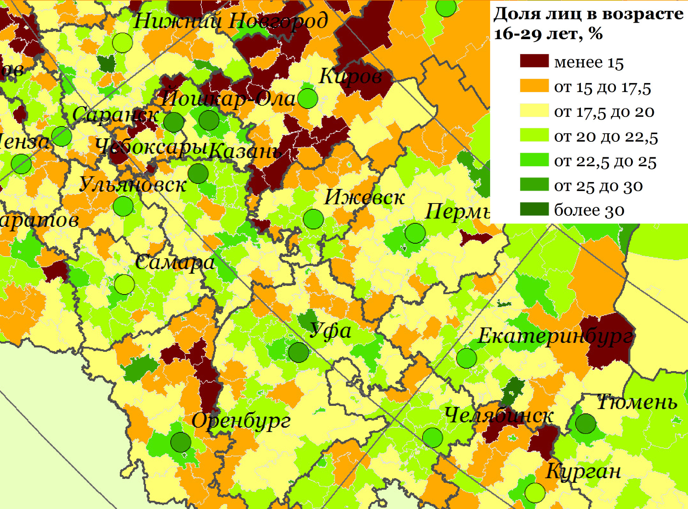
Рисунок 15. Доля населения в возрасте 16-29 лет, 2010, % - Поволжье и Урал, фрагмент
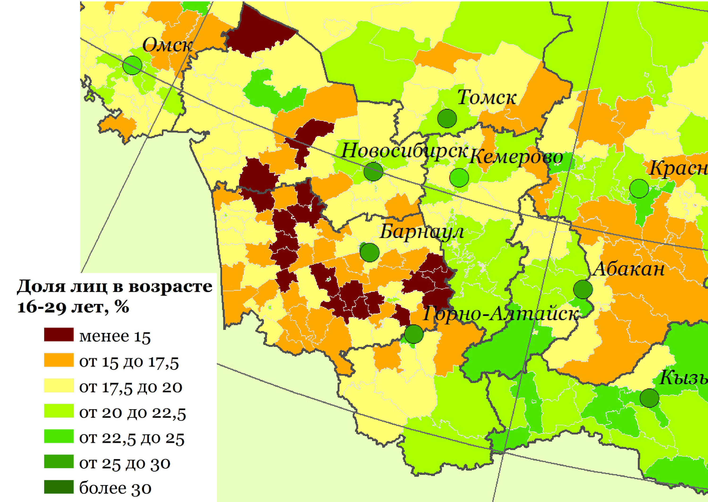
Рисунок 16. Доля населения в возрасте 16-29 лет, 2010, % - Юг Западной Сибири, фрагмент
По наблюдениям географов, вокруг любого мощного центра притяжения населения образуется депрессивное кольцо 16. И чем больше центр и его привлекательная мощь, тем больше диаметр кольца. Практически на всех картах, приведенных в данной работе, отчетливо просматривается депрессивное кольцо вокруг Москвы с огромным радиусом - около 500 километров. Также можно наблюдать «подкову» сходной природы вокруг Санкт-Петербурга (радиус около 200-250 км), а также, на примере менее крупных центров, - полукольцо к югу от Барнаула (радиус 100-120 км), кольцо вокруг Екатеринбурга (радиус около 150 км), Казани (80-100 км). Чем мощнее центр, тем больше получается диаметр кольца. Данное наблюдение полностью подтверждается расчетами изменения численности населения районов и городов на основе данных соседних переписей населения с использованием методов передвижки возрастов и рангового соседства 17.
16 Трейвиш А.И., Нефедова Т.Г. Города и сельская местность: состояние и соотношение в пространстве России // Региональные исследования, 2010, №2: 42-57.
17 Мкртчян Н.В., Кашницкий И.С. Стягивание населения с периферии в региональные центры: Россия и Европейский Север // В кн.: Угорский проект и потенциал ближнего севера: экономика, экология, сельские поселения / Науч. ред.: Н. Е. Покровский, Т. Г. Нефедова. М.: Логос, 2013. [В печати]
Вполне ожидаемо, наиболее депрессивные регионы формируются в зоне миграционного притяжения нескольких центров. Например, районы на границе Тверской и Новгородской областей. На них оказывают воздействия, помимо своих региональных центров, еще Москва и Санкт-Петербург (рис. 17).
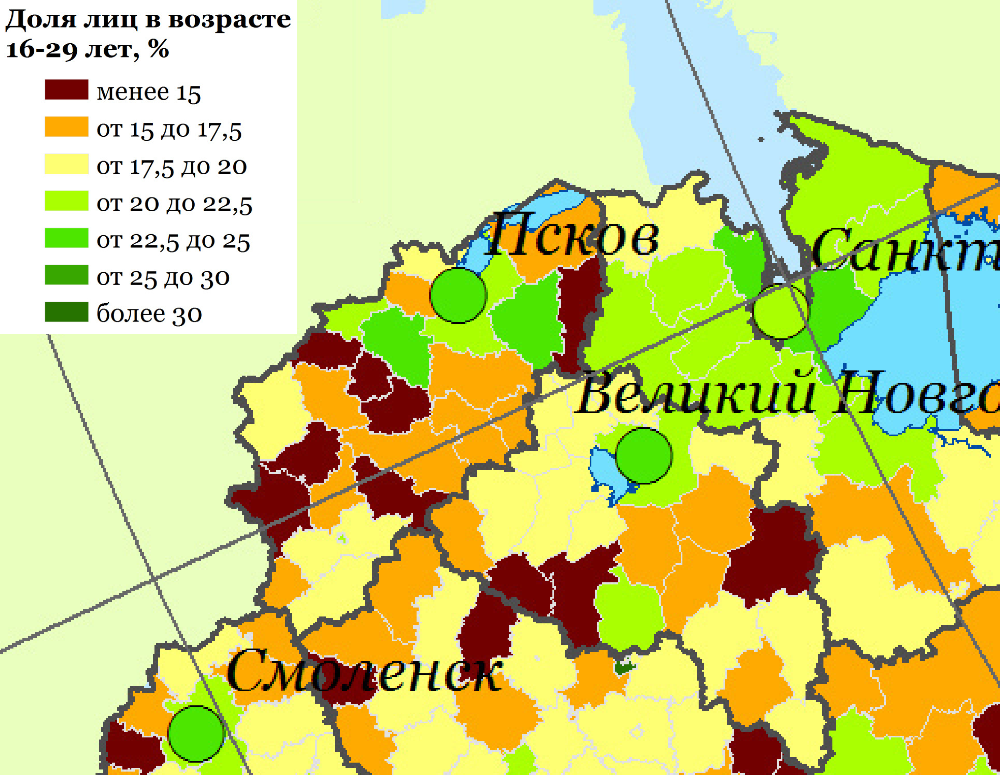
Рисунок 17. Доля населения в возрасте 16-29 лет, 2010, % - Северо-Запад, фрагмент
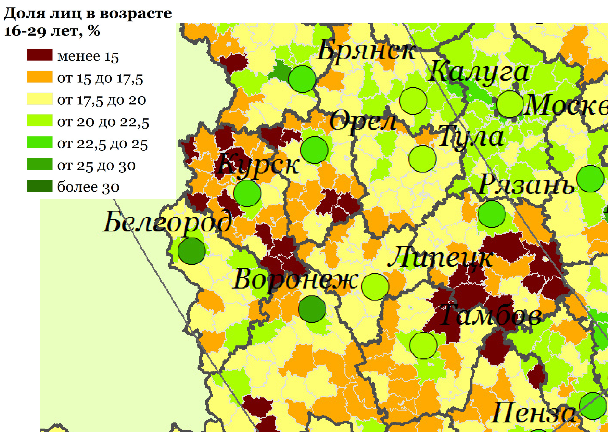
Рисунок 18. Доля населения в возрасте 16-29 лет, 2010, % - Черноземье, фрагмент
Другой пример – восточные районы Курской и Орловской областей (рис. 18), попадающие в сферу «миграционных интересов», сразу семи региональных центров: Белгорода, Курска, Орла, Тулы, Рязани, Липецка, Воронежа. И это не считая «длинных рук» Москвы! Северо-запад Курганской области (рис. 15) попадает под воздействие Челябинска, Екатеринбурга, Тюмени и сильно уступающего им по притягательной силе Кургана.
На рис. 19 представлена нагрузка на трудоспособное население по территориям низового ранга.
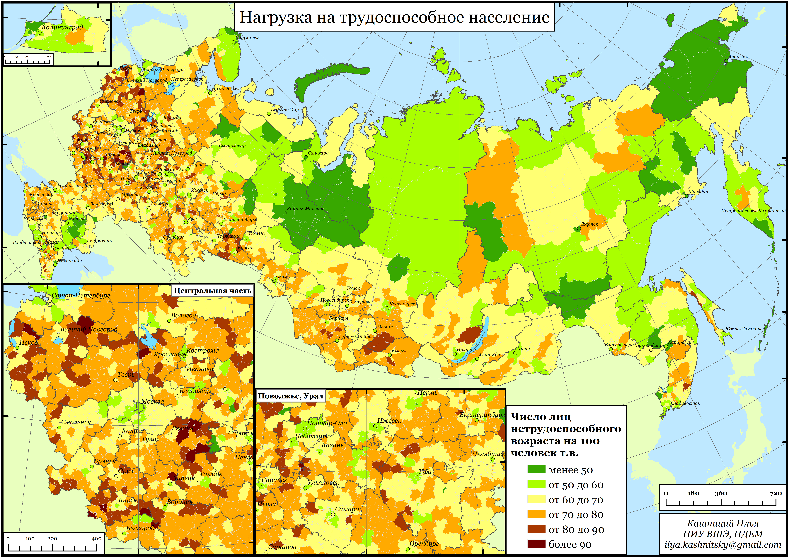
Рисунок 19. Нагрузка на трудоспособное население, число лиц трудоспособного возраста на 1000 человек трудоспособного возраста, 2010
Особенности использования этого простого показателя (отношение численности населения трудоспособного возраста, к числу лиц старше и младше трудоспособного возраста) заключаются в том, что на построенной на его основе карте уже не выделяются псевдо-благоприятные территории Северного Кавказа и Юга Западной Сибири. Ведь нагрузка детьми в обществах, близких к традиционному типу воспроизводства, очень значительна. Но четкое выделение на этой карте региональных центров и их пригородов – очевидный результат миграции (преимущественно внутренней и в меньшей степени – международной).
Пригороды больших центров притяжения особенно интересны для изучения. Хотя в России культура пригородов не развита так, как, например, в США, все же ближайшее районы особенно крупных городов принимают на себя значительную часть вновь прибывающих. И чем больше становится центр притяжения, тем более значимыми становятся пригороды, в которых поселяются мигранты, не сумевшие получить (арендовать, купить) жилье непосредственно в центре. Яркими примерами таких крупных центров миграционного притяжения в России предстают только Москва и Санкт-Петербург. Их пригороды не уступают ядру (а иногда и превосходят его) по исследуемым нами характеристикам возрастной структуры населения, а вероятно, и по темпам миграционного прироста. Это отчетливо видно на картах нагрузки на трудоспособное население (рис. 20) и доли молодого населения (рис. 15, 18).
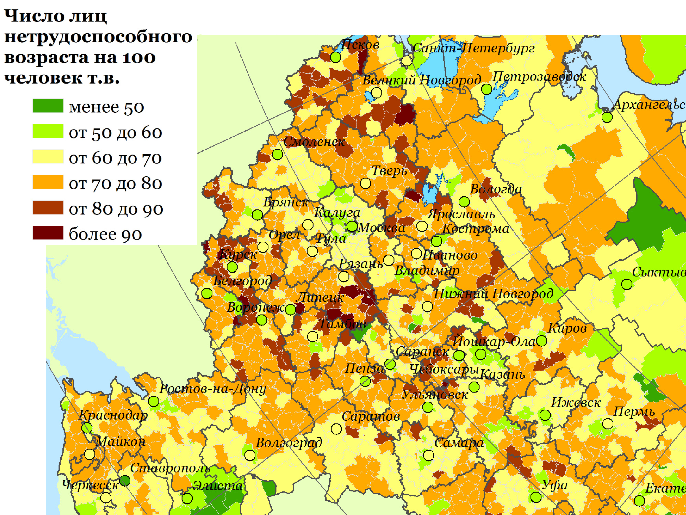
Рисунок 20. Нагрузка на трудоспособное население, 2010, на 1000 - фрагмент, Европейская часть
Различия возрастных структур населения, часто не видные на региональном уровне, но в явной мере проявляющие себя на уровне городов и районов, оказывают воздействие на демографические процессы. В свою очередь, различия в возрастном составе населения между крупными городами, малыми городами и поселками, и сельской глубинкой, являются следствием миграции, значительная часть которой осуществляется в пределах регионов. Ее влияние важно не столько вследствие общих масштабов перетока, они не столь велики, сколько вследствие специфики возрастного состава мигрантов, среди которых очень много молодых людей. По оценкам Н.В. Мкртчяна 18, в межпереписной период 1989-2002 внутренняя периферия теряла до 40% выпускников школ. По нашим оценкам за последний межпереписной период 19, из наиболее неблагоприятных районов в поисках лучшей доли уезжает до 70% выпускников школ.
18 Мкртчян Н.В. (2012). Влияние миграции на возрастной состав населения городов и районов России: оценка на основе данных переписей населения 1989 и 2002 гг. // Региональные исследования, № 2(36), 66-76.
19 Kashnitsky I. (2013). Migration of Youths in Russia: Impact on Sex-age Structures // Mediterranean Journal of Social Sciences. 4(10): 358-365.
И сейчас, и в будущем переток молодежи из глубинки в крупные города будет определять внутрирегиональные различия возрастного состава населения, послужит смягчению социально-демографической ситуации в городах, но еще больше усугубит демографическое неблагополучие российской глубинки.